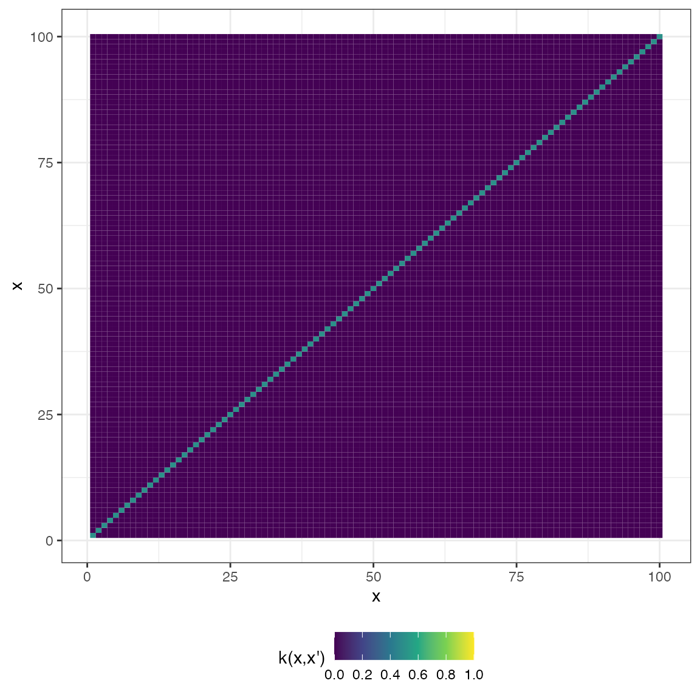

Purpose
tsgp is a lightweight package for modelling univariate
time-series data with Gaussian processes (GP). It is important to
remember that using a GP for time series basically converts the problem
from one of modelling a generative process (e.g., if we used an
ARIMA
model) to that of essentially a curve-fitting exercise. GPs are a Bayesian
method, so if you are unfamiliar with Bayesian inference, please go
check out some resources on that, such as this
great video by Richard McElreath. Essentially, the key bits to
remember for this post is that in Bayesian inference, we are interested
in the posterior distribution, which is proportional to the product of
the prior (our beliefs about an event before seeing the data) and the
likelihood (the probability of the data given model parameters).
If you would like a deeper treatment of how GPs can model time-series data, please see this post.
Generating some data
We are going to simulate some time series data with temporal dynamics that are commonly encountered in applied settings. Specifically, we are going to generate a noisy sine wave (i.e., to emulate periodic or seasonal data) with a linearly increasing trend:
set.seed(123)
y <- 3 * sin(2 * seq(0, 4 * pi, length.out = 100)) + runif(100) * 2
trend <- 0.08 * seq(from = 1, to = 100, by = 1)
y <- y + trend
tmp <- data.frame(timepoint = 1:length(y), y = y)
x1 <- 1:length(y)
# Draw plot
ggplot(data = tmp) +
geom_point(aes(x = timepoint, y = y), colour = "black") +
geom_line(aes(x = timepoint, y = y), colour = "black") +
labs(x = "Timepoint",
y = "Values") +
theme_bw()Package functionality
Covariance functions
tsgp contains several covariance functions (coded in C++
for efficiency). All of them return an object of class
GPCov (which is just a matrix but with a new inherited
class that allows us to make use of R’s generic functions).
Exponentiated quadratic
\[ k(x, x') = \text{exp} \left( -\frac{1}{2\sigma^{2}}||x - x'||^{2} \right) \]
In tsgp, cov_exp_quad` takes the following
arguments:
-
xa— vector of values -
xb— vector of values -
sigma— scalar denoting the variance. Defaults to1 -
l— scalar denoting the lengthscale. Defaults to1
We can produce two types of plots for GPCov objects by
calling the plot() generic. The first is a plot of samples
from the prior distribution, which we specify by setting
type = "prior", passing in the input vector
(x2 in this example), and setting the number of samples to
draw through the argument k. Here is an example:
x2 <- seq(from = -2, to = 2, length.out = 100)
mat_exp_quad <- cov_exp_quad(x2, x2, 1, 1)
plot(mat_exp_quad, x2, type = "prior", k = 5)The second is a plot of the covariance matrix represented as a heatmap:
plot(mat_exp_quad, type = "matrix")Rational quadratic
\[ k(x, x') = \sigma^{2} \left( 1 + \frac{||x - x'||^{2}}{2\alpha \mathcal{l}^{2}} \right)^{-\alpha} \]
In tsgp, cov_rat_quad takes the following
arguments:
-
xa— vector of values -
xb— vector of values -
sigma— scalar denoting the variance. Defaults to1 -
alpha— scalar \(>0\) denoting the mixing coefficient. Defaults to1 -
l— scalar denoting the lengthscale. Defaults to1
mat_rat_quad <- cov_rat_quad(x2, x2, 1, 1, 1)
plot(mat_rat_quad, x2, type = "prior", k = 5)
plot(mat_rat_quad, type = "matrix")Periodic
\[ k(x, x') = \sigma^{2} \text{exp} \left( -\frac{2}{\mathcal{l}^{2}}\text{sin}^{2} \left( \pi\frac{|x - x'|}{p} \right) \right) \]
In tsgp, cov_periodic takes the following
arguments:
-
xa— vector of values -
xb— vector of values -
sigma— scalar denoting the variance. Defaults to1 -
l— scalar denoting the lengthscale. Defaults to1 -
p— scalar denoting the period. Defaults to1
mat_periodic <- cov_periodic(x2, x2, 1, 1, 1)
plot(mat_periodic, x2, type = "prior", k = 5)
plot(mat_periodic, type = "matrix")Linear
\[ k(x,x') = \sigma^{2}_{b} + \sigma^{2}_{v} (x−c)(x'−c) \]
In tsgp, cov_linear takes the following
arguments:
-
xa— vector of values -
xb— vector of values -
sigma_b— scalar denoting the constant variance. Defaults to1 -
sigma_v— scalar denoting the constant variance. Defaults to1 -
c— scalar denoting the offset. Defaults to1
mat_linear <- cov_linear(x2, x2, 1, 1, 1)
plot(mat_linear, x2, type = "prior", k = 5)
plot(mat_linear, type = "matrix")White noise
\[ k(x, x') = \sigma^{2}I_{n} \]
In tsgp, noise is handled within the core
GP function since it only applies to the covariance matrix
between observations. The GP function is discussed later in
this vignette.
However, for visual comparison to the other covariance functions, here is what it looks like:
cov_noise <- function(x, sigma = 0.5){
X <- sigma * diag(length(x))
X <- structure(X, class = c("GPCov", "matrix"))
return(X)
}
mat_noise <- cov_noise(x2, 0.5)
plot(mat_noise, x2, type = "prior", k = 5)
plot(mat_noise, type = "matrix")
Combining covariance functions
Often in time-series analysis we need our models to capture multiple different statistical dynamics simultaneusly, such as trend, seasonality, and noise. It is quite easy to define a custom composite kernel function which either sums or multiplies different kernels:
CovSum <- function(xa, xb, sigma_1 = 1, sigma_2 = 1, l_1 = 1, l_2 = 1, p = 1){
X <- cov_exp_quad(xa, xb, sigma_1, l_1) +
cov_periodic(xa, xb, sigma_2, l_2, p)
X <- structure(X, class = c("GPCov", "matrix"))
return(X)
}Model fitting
The core GP function in tsgp to calculate
the posterior mean vector and covariance matrix. GP returns
an object of class x which is a list of the input data, the
posterior mean vector, and the posterior covariance matrix.
GP takes the following arguments:
-
x— vector of input data -
xprime— vector of data points to predict values for -
y— vector of values to learn from -
covfun— function specifying the covariance -
noise— scalar denoting the noise variance to add to the \((x, x)\) covariance matrix of observations. Defaults to0for no noise modelling -
...— hyperparameters to be passed tocov_function
Here is an example for a model which predicts values for a set of uniformally-distributed time points over the \([1-100]\) domain:
Model visualisation
We can easily visualise draws from the posterior distribution by
calling plot() on a TSGP object. The
plot() generic for TSGP takes only three
arguments:
-
x—TSGPmodel object -
prob— desired credible interval probability level. Defaults to0.95for a \(95\%\) credible interval -
draws— number of posterior draws to summarise over. Defaults to \(100\)
Here is an example:
plot(mod, 0.95, 100)Here is another for a model which predicts for all time points but with \(1000\) draws:
mod2 <- GP(x1, x1, y, CovSum, 0.8,
sigma_1 = 5, sigma_2 = 1, l_1 = 75, l_2 = 1, p = 25)
plot(mod2, 0.95, 1000)Need more uncertainty?
mod3 <- GP(x1, x1, y, CovSum, noise = 1.75,
sigma_1 = 5, sigma_2 = 1, l_1 = 75, l_2 = 1, p = 25)
plot(mod3, 0.95, 1000)What about a short-range forecast?